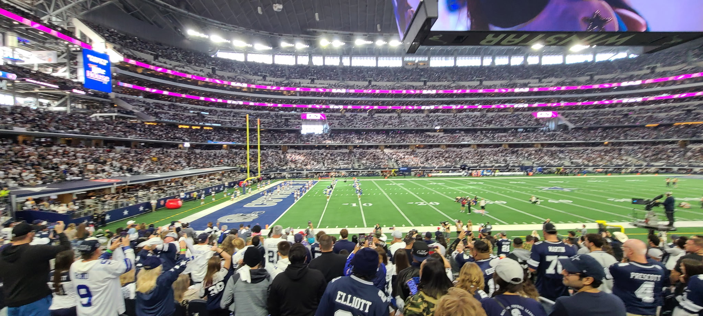

Est. 2026 · 14 venues scored · 2 booked

Welcome · About
Welcome to Stadium Scope! My name is Vihaan Jain, and I have a goal of visiting all 30 NFL, NBA, and MLB stadiums in my lifetime and ranking each one on my own scoring scale.
I’m currently a high school student, so I’m trying to attend as many games as I can right now. As my academic schedule gets less demanding, I hope to visit even more stadiums and continue growing Stadium Scope.
The purpose of this website is to make it easier for people to decide which stadium they should visit next or whether a certain stadium is actually worth visiting. For every stadium I visit, I’ll give an overview of the venue, share what I liked and disliked, rate it across four categories, provide some interesting and informative facts, and ultimately decide whether I think it’s worth visiting.
Thanks for visiting Stadium Scope! I hope you enjoy exploring the site and take advantage of all the tools and information available to make your experience more engaging.
Stadium Scope scores NFL stadiums, MLB ballparks and NBA arenas on four things and nothing else: atmosphere, the stadium itself, uniqueness, and gameplay. Average the four, publish it to two decimals. No sponsors, no rounding up for a famous name.
Table 01
What's actually on Stadium Scope right now. Venues visited and booked per league, how each scores on average, and which one sits at number one.
Average score = the mean of every venue's overall score in that league. All
figures are calculated from data/stadiums.js at page load.
The podium
The five best gamedays across all three leagues. Tap any row for the full review, or see the whole ranking.
Method
Atmosphere
Crowd noise, traditions, whether the building feels alive on a normal Tuesday and not just in the playoffs.
Stadium
The building as a building: concourses, seats, food, how well it moves eighty thousand people.
Uniqueness
Could this exist anywhere else? A roll-out grass field, a lighthouse end zone, or a grey bowl in a car park.
Gameplay
Sightlines, how close you sit, and whether the venue actually makes the sport better to watch.
Overall score = (atmosphere + stadium + uniqueness + gameplay) ÷ 4, rounded to two decimal places. It's computed in code every time the page loads, so a rating can never disagree with the score next to it. Shared stadiums are scored once per team. MetLife appears twice, because a Jets game and a Giants game are not the same day out.